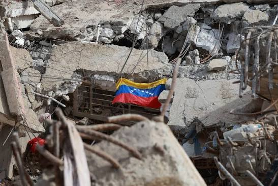
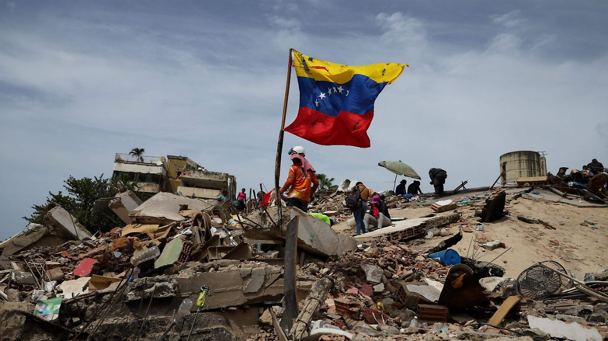
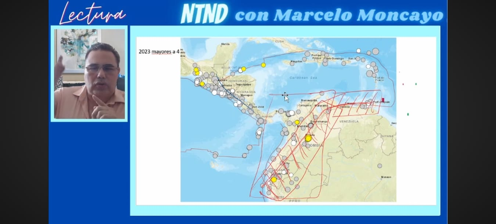

Galería



Estudio informativo sobre el reciente sismo registrado en Venezuela, abordando sus causas geológicas, los efectos ocasionados en la población e infraestructura.
Conocer másEn esta sección se presenta un resumen del terremoto registrado en Venezuela, incluyendo la magnitud reportada, el epicentro y las zonas donde fue sentido, de acuerdo con los informes disponibles hasta la fecha.
El epicentro del devastador terremoto doblete en Venezuela ocurrió en el estado Yaracuy.
* Sismo Premonitor (Magnitud 7.2): Su epicentro se localizó a 23 kilómetros al noreste de San Felipe.
* Sismo Principal (Magnitud 7.5): Su epicentro se ubicó a 20 kilómetros al sureste del municipio de Yumare.
Al tratarse de un evento sísmico doble, se registraron dos epicentros específicos con apenas 39 segundos de diferencia.
Los sismos ocurren debido al movimiento de las placas tectónicas. Venezuela se encuentra en una región donde interactúan placas que pueden generar actividad sísmica, Falla Guayaquil- Caracas, donde el Ingeniero Moncayo Theurer Lenin Marcelo explica a profundidad y con certeza del fenómeno natural que ocurrió en el país de Venezuela.

▶ Ver video en YouTube

